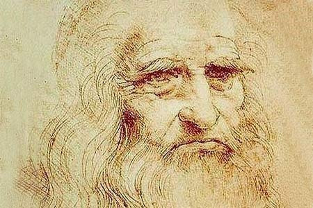
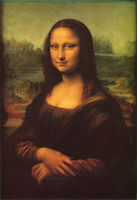

列奥纳多·迪·皮耶罗·达·芬奇 （Leonardo Di Serpiero Da Vinci），儒略历1452年4月15日（公历1452年4月23日）~1519年5月2日，享年67岁。欧洲文艺复兴时期的天才科学家、发明家、画家。现代学者称他为“文艺复兴时期最完美的代表”，是人类历史上绝无仅有的全才，他最大的成就是绘画，他的杰作《蒙娜丽莎》、《最后的晚餐》，《岩间圣母》等作品，体现了他精湛的艺术造诣。他认为自然中最美的研究对象是人体，人体是大自然的奇妙之作品，画家应以人为绘画对象的核心。

他是一位思想深邃，学识渊博、多才多艺的画家、天文学家、发明家、建筑工程师。他还擅长雕刻、音乐、发明、建筑，通晓数学、生理、物理、天文、地质等学科，既多才多艺，又勤奋多产，保存下来的手稿大约有6000页。他全部的科研成果尽数保存在他的手稿中，爱因斯坦认为，达·芬奇的科研成果如果在当时就发表的话，科技可以提前30-50年。
达·芬奇少年时已显露艺术天赋，15岁左右到佛罗伦萨拜师学艺，成长为具有科学素养的画家、雕刻家。并成为军事工程师和建筑师1482年应聘到米兰后，在贵族宫廷中进行创作和研究活动，1513年起漂泊于罗马和佛罗伦萨等地。1516年侨居法国，1519年5月2日病逝。小行星3000被命名为“列奥纳多”。最著名的作品是《蒙娜丽莎》现在是巴黎的卢浮宫的三件镇国之宝之一。